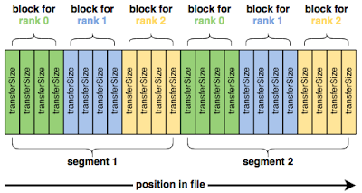

IOR¶
超级计算行业的大多数人都熟悉使用 FLOPS来衡量超级计算机的速度或能力。使用高性能 Linpack(HPL)基准观察到的这一测量结果是 Top500列表的基础。然而，随着数据密集型计算成为 HPC 社区的驱动力，I/O 性能变得越来越重要， IOR 基准测试已成为衡量集群和超级计算机的 I/O能力的标准方式。
IOR 简介¶
IOR测试通常涉及以下关键方面：
并行文件I/O： IOR允许在多个计算节点上同时执行文件I/O操作，以模拟并行应用程序在HPC环境中的文件读取和写入操作。这有助于评估系统的并行I/O性能。
吞吐量和延迟： IOR测试会测量系统在不同并行工作负载下的数据吞吐量和延迟。这有助于了解系统在处理大规模数据时的性能表现。
文件大小和访问模式： IOR测试允许用户指定要测试的文件大小、读取和写入的访问模式（例如随机访问或顺序访问），以模拟不同类型的应用程序工作负载。
并行文件系统支持： IOR通常用于测试并行文件系统的性能，这是在HPC集群中常见的存储解决方案。测试可以帮助评估这些文件系统在高并发环境中的表现。
性能度量： IOR测试会生成各种性能度量，包括带宽、IOPS（每秒的I/O操作数）、延迟和效率等，以帮助用户评估存储系统的性能特征。
集群上部署的ior¶
版本 |
平台 |
构建方式 |
模块名 |
|---|---|---|---|
3.3.0 |
思源一号 |
spack |
ior/3.3.0-gcc-11.2.0-openmpi |
3.3.0 |
Pi2.0 |
spack |
ior/3.3.0-gcc-9.2.0-openmpi-4.0.5 |
IOR 入门¶
IOR常见参数¶
IOR使用以下参数顺序写入数据：
blockSize (-b)
transferSize (-t)
segmentCount (-s)
numTasks (-n)
用图表来说明：
这四个参数是开始使用 IOR 所需的全部。然而，单纯地运行 IOR 通常会给出令人失望的结果。
例如，在Pi集群上运行单节点 IOR 测试，总共写入10 GiB：
作业脚本：
#!/bin/bash
#SBATCH -J ior-test1
#SBATCH -N 1
#SBATCH --ntasks-per-node 40
#SBATCH -p cpu
#SBATCH -exclusive
module load gcc/9.2.0 openmpi/4.0.5-gcc-9.2.0 ior/3.3.0-gcc-9.2.0-openmpi-4.0.5
mpirun -np 40 ior -t 1m -b 16m -s 16
测试结果：
Results:
access bw(MiB/s) IOPS Latency(s) block(KiB) xfer(KiB) open(s) wr/rd(s) close(s) total(s) iter
------ --------- ---- ---------- ---------- --------- -------- -------- -------- -------- ----
write 714.78 714.81 0.891822 16384 1024.00 0.001451 14.33 0.280439 14.33 0
read 58303 58441 0.008393 16384 1024.00 0.016069 0.175220 0.045412 0.175635 0
remove - - - - - - - - 2.76 0
Max Write: 714.78 MiB/sec (749.50 MB/sec)
Max Read: 58302.85 MiB/sec (61134.97 MB/sec)
根据测试结果来看，每秒只能从 Lustre 文件系统中写入几百兆字节的数据，而 Lustre 文件系统的速度本应更大。使用(-FfilePerProcess=1 ) 选项 从写入单个共享文件切换为每个进程一个文件，这会显着改变性能：
作业脚本：
#!/bin/bash
#SBATCH -J ior-test2
#SBATCH -N 1
#SBATCH --ntasks-per-node 40
#SBATCH -p cpu
module load gcc/9.2.0 openmpi/4.0.5-gcc-9.2.0 ior/3.3.0-gcc-9.2.0-openmpi-4.0.5
mpirun -np 40 ior -t 1m -b 16m -s 16 -F
测试结果:
Results:
access bw(MiB/s) IOPS Latency(s) block(KiB) xfer(KiB) open(s) wr/rd(s) close(s) total(s) iter
------ --------- ---- ---------- ---------- --------- -------- -------- -------- -------- ----
write 10523 10649 0.054914 16384 1024.00 0.057863 0.961590 0.563818 0.973092 0
read 40793 43119 0.009339 16384 1024.00 0.039125 0.237481 0.100307 0.251024 0
remove - - - - - - - - 0.973260 0
Max Write: 10523.16 MiB/sec (11034.33 MB/sec)
Max Read: 40792.97 MiB/sec (42774.53 MB/sec)
可以看到写入的速度提升到11034.33 Mb/s，这在很大程度上是因为让每个 MPI 进程处理自己的文件可以消除因文件锁定而产生的任何争用。
接下来使用多个节点进行IOR读写测试，在4个计算节点上同时执行文件I/O操作，以模拟并行应用程序在HPC环境中的文件读取和写入操作。
作业脚本：
#!/bin/bash
#SBATCH -J ior-test3
#SBATCH -N 4
#SBATCH --ntasks-per-node 40
#SBATCH -p cpu
module load gcc/9.2.0 openmpi/4.0.5-gcc-9.2.0 ior/3.3.0-gcc-9.2.0-openmpi-4.0.5
mpirun -np 160 ior -t 1m -b 16m -s 16 -F
测试结果：
Results:
access bw(MiB/s) IOPS Latency(s) block(KiB) xfer(KiB) open(s) wr/rd(s) close(s) total(s) iter
------ --------- ---- ---------- ---------- --------- -------- -------- -------- -------- ----
write 25919 25982 0.060796 16384 1024.00 0.052159 1.58 1.27 1.58 0
read 162059 171187 0.010880 16384 1024.00 0.032160 0.239270 0.132064 0.252747 0
remove - - - - - - - - 0.969064 0
Max Write: 25919.49 MiB/sec (27178.56 MB/sec)
Max Read: 162059.32 MiB/sec (169931.52 MB/sec)
可以看到在lustre系统上的多节点的测试下，最大写速度达到 27178.56 MB/sec，最大读速度达到169931.52 MB/sec。
页面缓存对基准测试的影响¶
真正发生的情况是，IOR 读取的数据实际上并不是来自Lustre，相反，文件的内容已经被缓存到计算节点的运行内存中，并且 IOR 能够直接从每个计算节点的 DRAM 中读取它们，因此 IOR 不是直接向 Lustre 写入和读取数据，实际上主要是每个计算节点上的内存。
有多种方法可以测量底层 Lustre 文件系统的读取性能。最粗略的方法是简单地写入比总页缓存容纳的数据更多的数据，以便在写入阶段完成时，文件的开头已经从缓存中逐出。例如，增加段数（-s）以写入更多数据。
更好的选择是让每个节点上的 MPI 进程只读取它们未写入的数据。例如，在每节点 4 个进程的测试中，将 MPI 进程到块的映射移动 4 个，使每个节点 N 读取节点 N-1 写入的数据。
由于页面缓存不在计算节点之间共享，因此以这种方式转移任务可确保每个 MPI 进程正在读取它未写入的数据。 IOR 提供了-C选项（reorderTasks）来执行此操作，它强制每个 MPI 进程读取其相邻节点写入的数据。使用此选项运行 IOR 可提供更可靠的读取性能：
作业脚本：
#!/bin/bash
#SBATCH -J ior-test1
#SBATCH -N 4
#SBATCH --ntasks-per-node 40
#SBATCH -p cpu
module load gcc/9.2.0 openmpi/4.0.5-gcc-9.2.0 ior/3.3.0-gcc-9.2.0-openmpi-4.0.5
mpirun -np 160 ior -t 1m -b 16m -s 16 -F -C
测试结果：
Results:
access bw(MiB/s) IOPS Latency(s) block(KiB) xfer(KiB) open(s) wr/rd(s) close(s) total(s) iter
------ --------- ---- ---------- ---------- --------- -------- -------- -------- -------- ----
write 26350 26373 0.030734 16384 1024.00 0.103698 1.55 1.26 1.55 0
read 13817 13827 0.171605 16384 1024.00 0.092789 2.96 0.903531 2.96 0
remove - - - - - - - - 0.997678 0
Max Write: 26350.48 MiB/sec (27630.49 MB/sec)
Max Read: 13816.78 MiB/sec (14487.94 MB/sec)
由于页面缓存，当写入已提交到内存而不是底层 Lustre 文件系统时，页面缓存会向 IOR 发出写入完成的信号。
为了解决页面缓存对写入性能的影响，我们可以在所有write()返回后立即发出fsync()调用，以强制刚刚写入的dirt page刷新到 Lustre。包括fsync()完成所需的时间可以衡量数据写入页面缓存以及页面缓存写回 Lustre 所需的时间。
IOR 提供了另一个方便的选项-e ( fsync ) 来执行此操作。并且，再次使用此选项会改变性能测量：
作业脚本：
#!/bin/bash
#SBATCH -J ior-test1
#SBATCH -N 4
#SBATCH --ntasks-per-node 40
#SBATCH -p cpu
module load gcc/9.2.0 openmpi/4.0.5-gcc-9.2.0 ior/3.3.0-gcc-9.2.0-openmpi-4.0.5
mpirun -np 160 ior -t 1m -b 16m -s 16 -F -C -e
测试结果：
Results:
access bw(MiB/s) IOPS Latency(s) block(KiB) xfer(KiB) open(s) wr/rd(s) close(s) total(s) iter
------ --------- ---- ---------- ---------- --------- -------- -------- -------- -------- ----
write 22509 22525 0.074681 16384 1024.00 0.065918 1.82 1.43 1.82 0
read 14349 14351 0.177082 16384 1024.00 0.351030 2.85 0.824950 2.85 0
remove - - - - - - - - 1.00 0
Max Write: 22509.46 MiB/sec (23602.88 MB/sec)
Max Read: 14349.29 MiB/sec (15046.32 MB/sec)
这样就对文件系统有了可信的带宽测量。
大规模IO测试¶
如果要对集群文件系统进行大规模的IO吞吐测试，可参考下面的作业脚本，该作业设置每个节点4个MPI进程，一共使用32个节点，blocksize设置为16m，transfersize设置为1m，segmentCount设置为4096，循环测试10000次。
在思源一号上运行：¶
#!/bin/bash
#SBATCH --job-name="iortest"
#SBATCH -N 32
#SBATCH --ntasks-per-node=4
#SBATCH -p 64c512g
#SBATCH --exclusive
#SBATCH --output=%j.out
#SBATCH --error=%j.err
module load gcc openmpi ior
export UCX_NET_DEVICES=mlx5_0:1
export OMPI_MCA_btl=^openib
for i in {1..10000}
do
mpirun ior -t 1m -b 16m -s 4096 -F -C -e
done
在pi2.0集群上运行：¶
#!/bin/bash
#SBATCH --job-name="iortest"
#SBATCH -N 32
#SBATCH --ntasks-per-node=4
#SBATCH -p cpu
#SBATCH --exclusive
#SBATCH --output=%j.out
#SBATCH --error=%j.err
module load gcc openmpi ior
for i in {1..10000}
do
mpirun ior -t 1m -b 16m -s 4096 -F -C -e
done
参考链接：